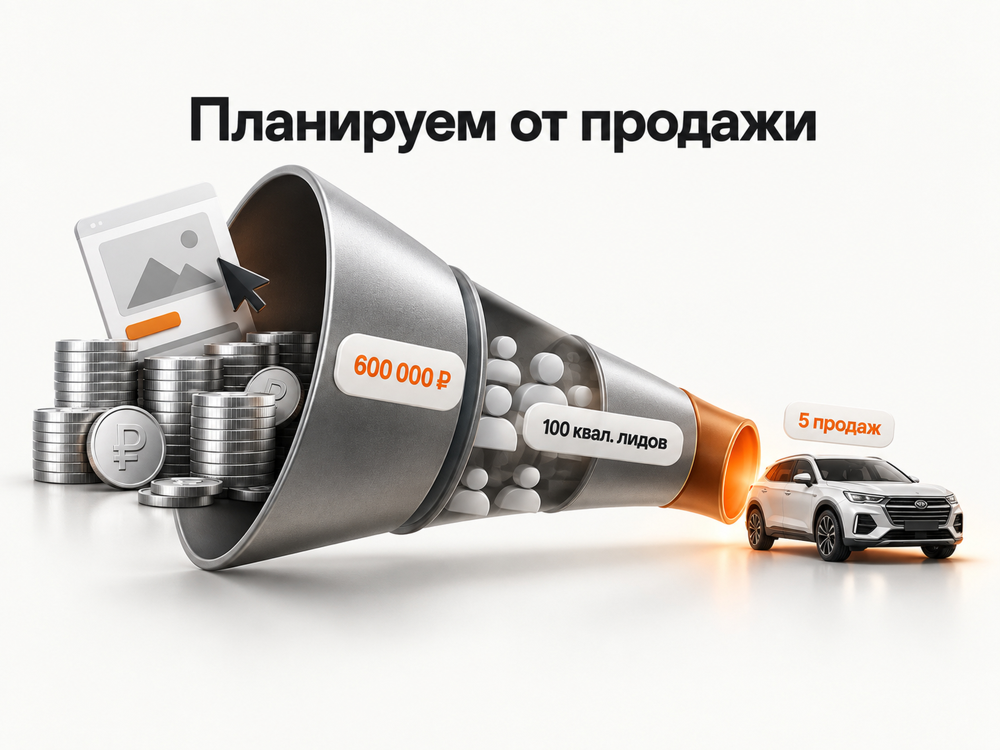

Блог о платном трафике
Продвижение автосалона в 2026 году: инструкция и прогноз
Российский автомобильный рынок за последние несколько лет сильно перестроился. Вместо привычного деления на официальных дилеров европейских, японских и корейских марок появилась гораздо более сложная структура: российские бренды, десятки китайских марок, мультибрендовые автосалоны, автомобили с пробегом и машины глобальных брендов, которые поставляются по альтернативным каналам.
Для рекламы это означает одно: универсальной схемы продвижения автосалона больше нет. Дилер Haval, мультибрендовый салон с Toyota и BMW, продавец автомобилей с пробегом и новый китайский бренд работают с разным спросом, доверием покупателей и экономикой сделки.
Ниже я собрал свежую статистику российского рынка и рекламные кейсы 2026 года, а затем на их основе построил ориентир по бюджету и воронке.
Что происходит с рынком автосалонов в России в 2026 году
По данным АВТОСТАТ, к середине июля 2026 года в России насчитывалось 4 788 дилерских центров по продаже и обслуживанию легковых автомобилей. Годом ранее было 4 347. Рост составил 10%.
Китайские марки по-прежнему занимают первое место по количеству дилерских контрактов - 59%. Но их доля снизилась с 64,1% годом ранее. Одновременно доля российских брендов выросла с 23,2% до 31%.
То есть дилерская сеть не сокращается, а продолжает перестраиваться и расширяться.
Сам рынок при этом нельзя назвать простым. В августе 2026 года в России было продано 114,3 тыс. новых легковых автомобилей, что на 6,5% меньше августа 2025 года.
При этом денег на автомобили тратят больше. За первое полугодие 2026 года финансовая емкость рынка новых легковых автомобилей составила 2,09 трлн рублей - на 25,1% больше, чем годом ранее. На китайские марки пришлось 44,7% денежных затрат, на российские - 24,2%.
Отдельно вырос альтернативный импорт. За январь-август 2026 года на него пришлось около 18% российского рынка новых легковых автомобилей. Более 15% всего рынка составили глобальные бренды, которые сейчас в значительной степени поставляются в Россию вне прежних официальных каналов.
Получается довольно конкурентная среда: автомобилей и продавцов много, структура предложения постоянно меняется, а покупатель может выбирать между официальным китайским брендом, российской маркой, автомобилем глобального бренда из альтернативного импорта и машиной с пробегом.
Дополнительный фактор - кредитование. В августе 2026 года было выдано 101 тыс. автокредитов, на 6,9% меньше, чем годом ранее. НБКИ отмечает, что в последние полгода выдача держится примерно на уровне 95-105 тыс. кредитов в месяц. В июле банки отклоняли 67,5% заявок на автокредиты.
Поэтому заявка на автомобиль еще очень далека от продажи. Человек может оставить контакты, не пройти кредитование, не устроить стоимость трейд-ин, выбрать другую комплектацию или просто уйти к конкуренту.
Именно поэтому рекламу автосалона я бы изначально оценивал по всей воронке.

Какая воронка нужна автосалону
Минимальная воронка выглядит так:
Реклама → обращение → квалифицированный лид → визит или предметная консультация → продажа автомобиля
Для отдельных салонов между квалифицированным лидом и продажей появятся дополнительные этапы: тест-драйв, оценка автомобиля по трейд-ин, одобрение кредита, бронирование.
Считать только заявки опасно.
Свежие кейсы это хорошо показывают.
В опубликованном в августе 2026 года кейсе регионального дилера Haval за 10 месяцев было получено 2 766 обращений. Из них целевыми оказались 1 046, то есть около 38%. Обычное обращение стоило 2 219 ₽, а целевой лид уже 5 868 ₽.
У дилера Geely в Москве в феврале 2026 года реклама во VK давала 160 лидов по 3 650 ₽. До отдела продаж доходило только 80. Фактическая стоимость качественного лида составляла уже 7 301 ₽. После оптимизации в марте стоимость такого обращения снизили до 6 777 ₽.
Разница примерно двукратная.
Поэтому отчет вида «получили 200 заявок по 3 000 ₽» для автосалона почти бесполезен, пока неизвестно, сколько из этих людей действительно хотели купить автомобиль.
Я бы обязательно передавал из CRM обратно в аналитику как минимум квалифицированный лид, визит или другой ближайший к продаже этап и саму продажу. Подробнее механизм я разбирал в статье про офлайн-конверсии в Яндекс Директе и Метрике.
Свежие цифры из рекламы автосалонов
Ниже не «средние показатели автомобильного рынка», а результаты отдельных опубликованных кейсов. Это принципиальная разница.
Региональный дилер Haval, 2026
Канал: Яндекс Директ
Результат: 2 766 обращений, 1 046 целевых лидов, CPL 2 219 ₽, целевой лид 5 868 ₽.
Московский дилер китайского бренда, кейс июля 2026
Канал: Яндекс Директ
Результат: после подключения нормальной аналитики CPL снизился с 24 958 до 6 289 ₽; после дальнейшей оптимизации удерживался около 5 000 ₽, обращения выросли в 4 раза.
Официальный дилер Geely, Москва, 2026
Канал: VK Ads
Результат: квалифицированный лид сначала стоил 7 301 ₽, после оптимизации - 6 777 ₽.
Автосалон автомобилей с пробегом, Вологда, январь-апрель 2026
Канал: VK Ads
Результат: 398 целевых лидов по 1 731 ₽, 23 продажи, стоимость продажи 29 957 ₽.
Последний кейс особенно хорошо показывает, почему нельзя смешивать новые и подержанные автомобили в одну «среднюю цену лида».
398 целевых лидов дали 23 продажи. Если пересчитать опубликованные данные:
23 / 398 × 100% = 5,8%
Это фактическая конверсия целевого лида в продажу в конкретном кейсе автомобилей с пробегом.
Но переносить 5,8% автоматически на новый автосалон в другом городе нельзя.
Какой CPL закладывать в прогноз
По свежим кейсам новых автомобилей квалифицированный лид встречается примерно в районе 5 800-7 300 ₽.
Я бы использовал это не как «среднюю цену лида по рынку», а как стартовую точку для предварительного расчета.
Для нового автосалона с нормальным сайтом, реальными автомобилями в наличии, CRM и работающим отделом продаж я бы первоначально проверял модель примерно с 5 000-8 000 ₽ за квалифицированный лид.
Почему диапазон широкий:
региональный Haval получил целевой лид по 5 868 ₽; московский Geely - 6 777-7 301 ₽; в другом московском кейсе обычная заявка после оптимизации удерживалась около 5 000 ₽.
У конкретного дилера цифра может оказаться как ниже, так и значительно выше этого диапазона.
На стоимость особенно влияют регион, марка, узнаваемость модели, цена автомобиля, реальные условия кредита, трейд-ин, наличие автомобилей, конкуренция и качество отдела продаж.
Прогноз бюджета на продвижение автосалона
Для прогноза лучше идти не от вопроса «сколько потратить на Директ», а от нужного количества продаж.
Возьму для примера автосалон новых автомобилей, которому нужно получить 5 дополнительных продаж в месяц из платной рекламы.
Для первоначальной модели заложу:
стоимость квалифицированного лида - 5 000-8 000 ₽;
конверсию квалифицированного лида в продажу - 4-6%.
Второй показатель здесь является моим расчетным допущением для прогноза, а не опубликованной средней по рынку.
Получается:
Сильный сценарий:
квал. лид → продажа: 6%
цена квал. лида: 5 000 ₽
нужно квал. лидов: 84
рекламный бюджет: 420 000 ₽
CAC: 84 000 ₽
Рабочий сценарий:
квал. лид → продажа: 5%
цена квал. лида: 6 000 ₽
нужно квал. лидов: 100
рекламный бюджет: 600 000 ₽
CAC: 120 000 ₽
Осторожный сценарий:
квал. лид → продажа: 4%
цена квал. лида: 8 000 ₽
нужно квал. лидов: 125
рекламный бюджет: 1 000 000 ₽
CAC: 200 000 ₽
Это расчетный диапазон, а не норматив рынка.
Если нужно 10 дополнительных продаж, при неизменной воронке цифры примерно удваиваются.
При рабочем сценарии:
10 продаж / 5% = 200 квалифицированных лидов
200 × 6 000 ₽ = 1 200 000 ₽ рекламного бюджета
Но тратить эти деньги имеет смысл только в том случае, если экономика автомобиля позволяет платить около 120 000 ₽ за привлеченную продажу.

Как понять допустимую стоимость лида
У автосалона есть еще одна сторона расчета - маржа.
Допустим, с учетом продажи автомобиля, кредита, страховки, дополнительного оборудования, трейд-ин и остальных продуктов салон может позволить себе потратить на привлечение покупателя максимум 100 000 ₽.
Если из квалифицированных лидов покупают автомобиль 5%:
100 000 ₽ × 5% = 5 000 ₽
Значит, квалифицированный лид должен обходиться примерно не дороже 5 000 ₽.
Если реклама стабильно дает его по 8 000 ₽, увеличивать бюджет только ради количества заявок бессмысленно. Нужно либо увеличивать конверсию отдела продаж, либо улучшать рекламу и оффер, либо менять экономику сделки.
По такой же логике я считаю прогнозы Директа в отдельной статье про прогноз рекламного бюджета в Яндекс Директе.
Продвижение разных типов автосалонов отличается
Перед настройкой рекламы я бы сначала определил, что именно представляет собой автосалон.
Для официального дилера известной марки основной спрос уже сформирован. Человек ищет конкретный бренд, модель, комплектацию, цену, наличие, кредит или трейд-ин.
Для нового китайского бренда одной работы с готовым брендовым спросом может быть недостаточно. Человек пока не знает марку и сравнивает ее с Haval, Geely, Chery, Changan и другими конкурентами. Здесь становится важнее работа со спросом на класс автомобиля, аудиториями конкурентов, обзорами и доверием.
Для мультибрендового салона с альтернативным импортом сильной стороной является ассортимент. Но одновременно возникает больше вопросов о гарантии, происхождении автомобиля, сроках поставки, комплектации и финальной цене.
Для автомобилей с пробегом на первый план выходит уже конкретный сток. Покупатель выбирает не абстрактную модель, а конкретную машину с определенным годом выпуска, пробегом, ценой и состоянием.
Поэтому копировать одну рекламную структуру между этими четырьмя моделями бизнеса я бы не стал.
Яндекс Директ для автосалона
Для автосалонов Яндекс Директ остается одним из основных платных каналов, потому что позволяет работать с уже сформированным спросом.
Поиск
На Поиске я бы разделял запросы по смыслу:
бренд и модель: Haval Jolion купить, Geely Monjaro цена;
коммерческие запросы: купить новый автомобиль, автомобиль в кредит, авто в наличии;
региональные запросы: купить Geely в Ростове, дилер Haval Казань;
характеристики и комплектации: конкретная модель + двигатель, комплектация, полный привод;
трейд-ин и кредит: автомобиль в трейд-ин, купить машину в кредит;
спрос конкурентов: там, где это допустимо и действительно имеет смысл.
При этом слишком сильно дробить кампании не нужно. Десятки маленьких кампаний с несколькими конверсиями в каждой ухудшают накопление статистики.
Разницу между поисковой рекламой и сетями я отдельно разбирал в материале «Поиск или РСЯ».
Товарные объявления и фид
Для автомобильной тематики это особенно важный инструмент.
Яндекс позволяет создавать автомобильные объявления из фида и показывать новые и подержанные легковые автомобили в товарной галерее. Для объявления должны быть актуальны цена и наличие, а ссылка должна вести на страницу конкретного автомобиля. В качестве источника можно использовать XML-фид Авто.ру.
Для автосалона с десятками или сотнями машин это намного логичнее, чем вручную собирать объявления на каждую модель.
Фид должен автоматически обновляться вместе со стоком:
автомобиль продан → предложение исчезло;
изменилась цена → цена обновилась;
появилась новая машина → она автоматически может попасть в рекламу.
Свежий кейс московского дилера хорошо показывает потенциал такого подхода: после запуска товарной механики с кастомным фидом количество заявок выросло еще на 30%.
РСЯ и ретаргетинг
Покупка автомобиля редко происходит после первого посещения сайта.
Человек смотрит несколько брендов, сравнивает комплектации, считает кредит, возвращается к объявлению, изучает отзывы.
Поэтому РСЯ имеет смысл использовать не как дешевую замену Поиску, а как отдельную часть воронки: возвращать посетителей сайта, работать с интересом к конкретным моделям, конкурентам и автомобильным категориям.
Оценивать РСЯ нужно по квалифицированным обращениям и продажам, а не по тому, что там получился дешевый CPL.
Какие цели передавать в Яндекс Директ
Для автосалона я бы не оптимизировал рекламу только по отправке любой формы.
Намного полезнее построить несколько уровней:
обращение → квалифицированный лид → визит/тест-драйв → продажа
Если продаж мало, сразу обучать стратегию только на них может быть проблемой из-за недостатка данных.
В таком случае логичнее найти промежуточную цель, которая происходит достаточно часто и хорошо связана с будущей продажей. Обычно это квалифицированный лид или следующий подтвержденный этап воронки.
В свежем кейсе московского автосалона только подключение звонков, сообщений и нормальных целей к Директу снизило CPL с 24 958 до 6 289 ₽. После интеграции CRM рекламу начали оптимизировать уже по более глубоким этапам, а продажи выросли в два раза.
Для автомобильной тематики связь рекламы и CRM я бы считал обязательной частью настройки, а не дополнительной функцией.
Сайт автосалона
Реклама не исправит слабую посадочную страницу.
Если человек ищет конкретный автомобиль, ему лучше сразу показать страницу этой машины или модели, а не отправлять на главную страницу дилерского центра.
На странице должны быстро считываться реальные данные: цена, наличие, комплектация, характеристики, фотографии, условия покупки, трейд-ин, кредит, гарантия и контакты салона.
Особенно осторожно я бы работал со скидками и ежемесячным платежом.
В автомобильной рекламе человек часто видит привлекательную цену, а после звонка выясняется, что она действует только при кредите, трейд-ин, покупке дополнительных продуктов или выполнении сразу нескольких условий.
Такой подход может повысить количество обращений, но ухудшить квалификацию, визиты и продажи.
В кейсе московского дилера переход к более прозрачным предложениям и отказ от неясных условий дал еще 20% обращений.
Поэтому оффер должен быть конкурентным, но его условия должны совпадать с тем, что человек услышит от менеджера.
Классифайды для автосалона
Для автомобильной тематики классифайды являются отдельным полноценным каналом, особенно для автомобилей с пробегом и мультибрендового стока.
Здесь важна работа не только с размещением, но и с самим ассортиментом.
Свежий кейс Авто.ру Бизнес хорошо это показывает. У дилера «Аларм-Моторс» в Санкт-Петербурге автомобили разделили на группы по сроку нахождения в стоке, спросу и цене и для каждой группы применяли отдельную стратегию продвижения.
В результате количество лидов снизилось на 3,1%, но продажи выросли на 7,3%. Конверсия лидов в продажу выросла на 10,7%, а стоимость продажи снизилась на 8,4%.
Это хороший пример того, почему задача маркетолога автосалона не должна звучать как «дать как можно больше лидов».
Если на складе есть автомобиль с завышенной ценой или модель, которая месяцами не продается, дополнительные показы сами по себе проблему не решат.
Яндекс Карты
Автосалон является локальным бизнесом, поэтому карточка организации должна рассматриваться как самостоятельная точка привлечения клиентов.
Человек может искать дилера непосредственно на Картах, смотреть рейтинг, фотографии, отзывы, время работы и строить маршрут.
Для каждого дилерского центра нужны актуальные контакты, корректные категории, фотографии салона и автомобилей, ответы на отзывы и полноценное заполнение карточки.
Особенно это важно для запросов вида «автосалон рядом», «дилер Geely», «Haval Москва» и других запросов с локальным намерением.
SEO для автосалона
У автомобильной тематики большая семантика, поэтому SEO хорошо дополняет платный трафик.
Я бы в первую очередь развивал страницы конкретных марок и моделей, комплектаций, автомобилей в наличии и региональные страницы там, где у дилера действительно есть соответствующий центр.
Отдельно можно собирать информационный спрос:
сравнения моделей, различия комплектаций, обзоры, стоимость владения, кредит, трейд-ин, гарантия, особенности гибридов и электромобилей.
Для мультибрендового салона альтернативного импорта особенно интересен спрос по конкретным моделям, которых нет в официальной российской линейке.
Но каталог должен оставаться актуальным. Сотни индексируемых страниц давно проданных автомобилей превращают сайт в склад бесполезных URL.
VK Ads
VK я бы рассматривал как дополнительный performance-канал, а не автоматически распределял туда часть бюджета.
Но свежие автомобильные кейсы показывают, что канал способен работать.
У московского дилера Geely стоимость квалифицированного обращения после оптимизации составила 6 777 ₽. У автосалона автомобилей с пробегом в Вологде за январь-апрель 2026 года было получено 398 целевых лидов по 1 731 ₽ и 23 продажи по 29 957 ₽.
Результаты различаются в несколько раз даже внутри одной автомобильной тематики, поэтому переносить CPL из одного кейса в другой нельзя.
Что рекламировать в первую очередь
В автосалоне я бы распределял бюджет неравномерно между всем ассортиментом.
Приоритет можно определять по сочетанию четырех показателей: спрос, наличие, маржинальность и необходимость продать конкретный автомобиль.
Например, нет смысла активно покупать дорогой трафик на машину, которой фактически нет и срок поставки неизвестен.
С другой стороны, часть бюджета можно намеренно направлять на автомобили, которые слишком долго находятся в стоке. Но тогда маркетинг должен работать вместе с ценообразованием. Если предложение проигрывает рынку по цене на 300 000 ₽, одной сменой объявления проблему не решить.
Какие показатели смотреть каждую неделю
Для управления рекламой автосалона я бы свел отчет минимум до такой цепочки:
расход → обращения → квалифицированные лиды → визиты/тест-драйвы → продажи → CAC
Дополнительно полезно разделять показатели по марке, модели, новому и подержанному автомобилю, региону и рекламному каналу.
CPL обычного лида остается вспомогательной метрикой.
Главные показатели - стоимость квалифицированного лида и стоимость продажи.
Если CPL снизился на 30%, а стоимость продажи выросла, реклама стала хуже, а не лучше.
Основные ошибки при продвижении автосалона
Самая дорогая ошибка - оптимизировать маркетинг по количеству заявок.
Из свежих кейсов видно, что до отдела продаж может доходить примерно половина обращений, а иногда и меньше. Поэтому дешевые лиды легко создают иллюзию эффективной рекламы.
Вторая проблема - неправильные или неполные данные для алгоритмов. Если Директ видит формы, но не видит звонки и дальнейшее качество лидов, он оптимизируется на урезанной картине.
Третья - неактуальный сток. Рекламировать проданную машину или показывать неправильную цену особенно опасно в товарных форматах.
Четвертая - чрезмерное дробление рекламных кампаний. Автосалону нужны данные для обучения алгоритмов, поэтому структура из десятков маленьких кампаний часто только мешает.
Пятая - разрыв между рекламой и отделом продаж. Если менеджер долго перезванивает, не знает условия объявления или предлагает клиенту совершенно другую цену, рекламой эту проблему не исправить.
Пошаговая схема запуска продвижения автосалона
Я бы запускал продвижение в такой последовательности:
- Разделить бизнес по направлениям: новые автомобили, пробег, официальные бренды, альтернативный импорт.
- Посчитать допустимый CAC и стоимость квалифицированного лида.
- Проверить сайт, сток, цены, условия кредита и трейд-ин.
- Настроить Метрику, коллтрекинг и передачу статусов из CRM.
- Запустить Яндекс Директ на сформированный поисковый спрос.
- Подключить товарные объявления и актуальный фид автомобилей.
- Добавить РСЯ и ретаргетинг.
- Отдельно развивать классифайды и Яндекс Карты.
- После накопления статистики протестировать VK и другие дополнительные источники.
- Оптимизировать рекламу по квалифицированному лиду и продаже, а не по самому дешевому обращению.
Какой бюджет я бы закладывал на старт
Если говорить именно о полноценном автосалоне новых автомобилей, а не о небольшой площадке с несколькими машинами, бюджет в 50-100 тыс. ₽ в месяц часто будет слишком маленьким для нормальной проверки гипотез.
При рабочем ориентире около 6 000 ₽ за квалифицированный лид бюджет 100 000 ₽ даст расчетно всего около 16-17 таких обращений.
Этого мало и для продаж, и для стабильного обучения рекламы.
Для модели, где требуется около пяти дополнительных продаж в месяц, мой первоначальный расчет дает примерно 400 тыс. - 1 млн ₽ рекламного бюджета в месяц, а рабочая середина находится около 600 тыс. ₽.
Для 10 продаж - около 1,2 млн ₽ при рабочем сценарии.
Еще раз: это прогнозная модель на основе свежих опубликованных результатов, а не обещание конкретного количества продаж.
Перед запуском ее нужно пересчитать для конкретного региона, марки, стока, маржинальности и фактической конверсии отдела продаж.
Вывод
Продвижение автосалона в 2026 году имеет смысл строить от продажи назад.
Свежие кейсы показывают, что обычная заявка на новый автомобиль может стоить около 2-5 тыс. ₽, а квалифицированное обращение уже около 6-7 тыс. ₽. При плохой аналитике и слабой рекламной связке цена заявки может превышать 20 тыс. ₽.
Поэтому главная задача - не получить максимально дешевый CPL, а связать Яндекс Директ, классифайды, CRM и отдел продаж в одну систему и понимать стоимость реального покупателя.
Яндекс Директ я бы использовал как основной инструмент работы со сформированным спросом, товарные объявления - для масштабного стока, классифайды - как отдельный канал выбора автомобилей, Карты - для локального спроса, SEO - для накопительного трафика, а VK - как дополнительный канал после проверки экономики.
Если допустимый CAC известен заранее, решение о масштабировании становится гораздо проще: реклама либо укладывается в экономику продажи автомобиля, либо нет.
Я занимаюсь настройкой и ведением Яндекс Директа и могу рассчитать рекламу под фактическую экономику бизнеса.